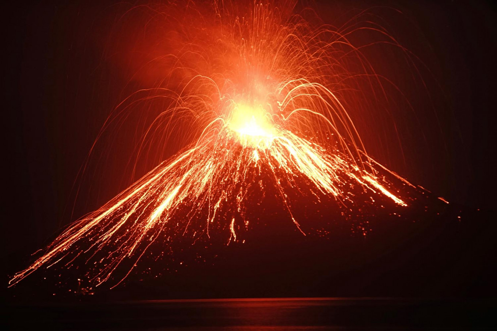
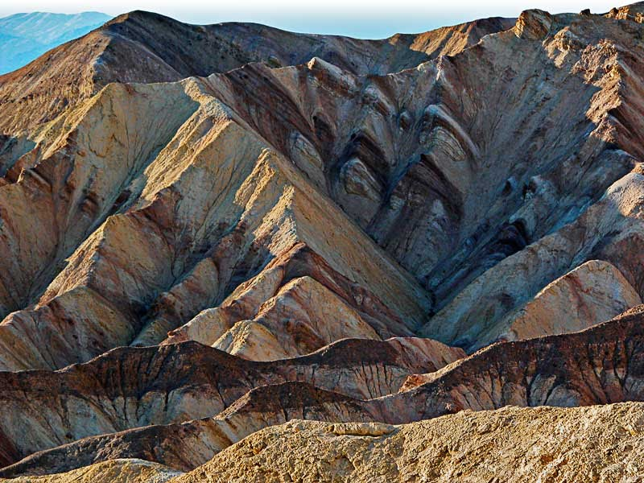
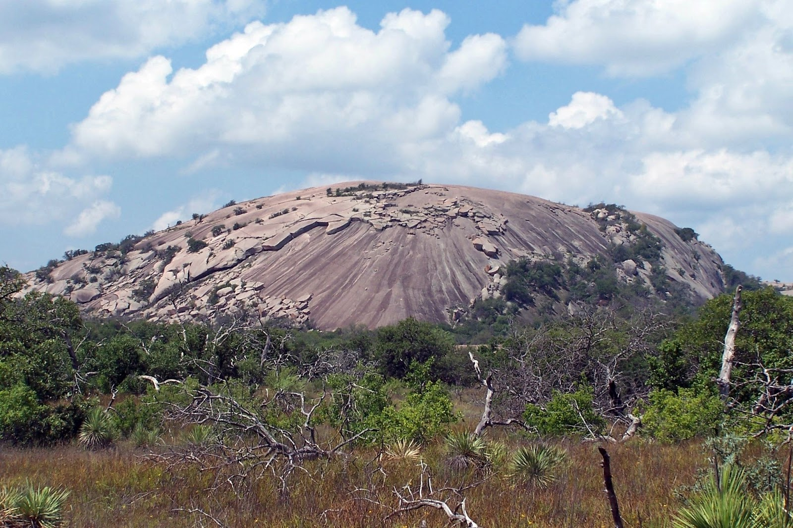

Volcanic mountains are a special class of mountains. A volcano is a vent or opening through which magma, ash, gases, and water vapour are ejected out
Fold mountains are formed by the effects of folding on layers within the upper part of the Earth's crust. Before the development of the theory of plate ...
Block mountains are formed due to upward movement of middle block between two normal faults . The up-thrown block is also called as horst.

Residual mountains are the remnants of previously existing mountains that have been subjected to weathering and erosion for an extended period. The residual mountains owe their current shape to erosion by rivers, glaciers, wind,
